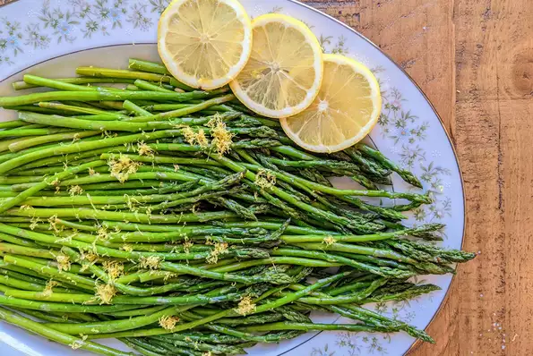

Oven-Roasted Asparagus

The shining star in any dish!
This recipe is perfect side dish that will add some color and a mouth watering flavor that will leave your guests wanting more! It also works as a quick
and easy addition to any meal if you don't feel too energetic to make something more ambitious.
This super-food really takes 5 minutes to prepare, and 12-15 minutes(depending on thickness of the spears)
to bake.
Ingredients
- 1 bunch thin asparagus spears, trimmed
- 3 tablespoons olive oil
- 1 1/2 tablespoons grated Parmesan cheese Optional
- 1 clove garlic, minced Optional
- 1 teaspoon sea salt
- 1/2 teaspoon ground black pepper
- 1 tablespoon lemon juice Optional
Directions
Step One:
Preheat oven to 425 degrees F (220 degrees C).Step Two:
Place the asparagus into a mixing bowl, and drizzle with the olive oil.
- Toss to coat the spears, then sprinkle with Parmesan cheese, garlic, salt, and pepper>.
- Arrange the asparagus onto a baking sheet in a single layer.
Step Three:
Bake in the preheated oven until just tender, 12 to 15 minutes depending on thickness.
- Sprinkle with lemon juice just before serving.